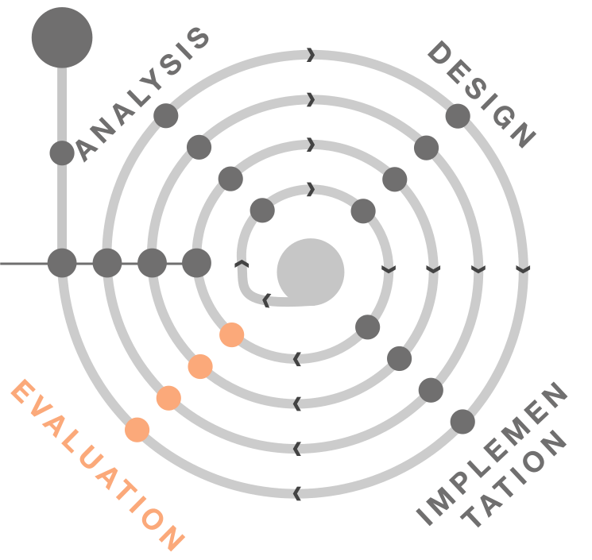

Evaluation
Don’t fall in love with your prototype
The goal of a designer is to listen, observe, understand, sympathize, empathize, synthesize, and glean insights that enable him or her to make the invisible visible.
Overview Evaluation tasks

We will take a closer look at evaluation for several tasks. Feel free to already discover more about the methods: